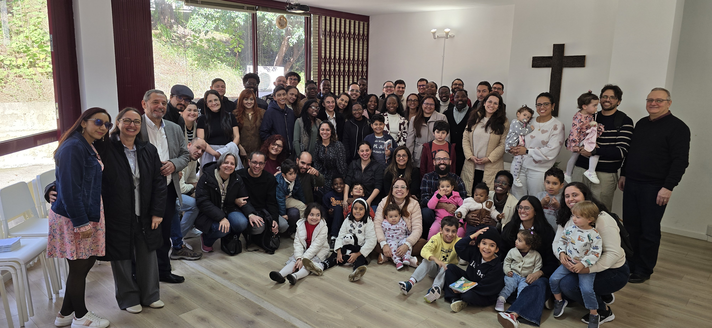

Doutrina
Nós somos uma igreja reformada conservadora e confessional. Subscreve a Confissão de Fé de Westminster na sua redação original de 1643. A denominação tem o culto centrado no Princípio Regulador ou Diretório de Culto de Westminster, composto pela Santa Convocação à Adoração, Louvor e Adoração de Hinos, Salmos e Cânticos Espirituais, Oração de Arrependimento, Ofertório, Pregação das Sagradas Escrituras, Administração da Santa Ceia do Senhor e Bênção Apostólica.
História
O que começou sendo uma pequena reunião no Jardim do Lago aos domingos de manhã de Novembro de 2020, hoje temos visto a chegada de vários outros irmãos.
No início éramos seis, depois 15 e hoje somos, aos domingos, em média de 50 pessoas entre adultos, jovens, adolescentes e crianças. Somos 35 membros comungantes e mais 11 membros menores. Ainda outros irmãos serão recebidos até o fim deste ano.
Em 15 de Junho 2025 fomos elevados a condição de Igreja Organizada pela Igreja Cristã Presbiteriana de Portugal (ICPP). Temos um Conselho de Presbíteros e uma Junta Diaconal e alguns ministérios onde servimos uns aos outros. Nossos cultos dominicais se revestem de uma diversidade cultural como nunca imaginamos: Portugueses, Brasileiros, Colombianos, Angolanos, Moçambicanos e ainda outros chegarão.
